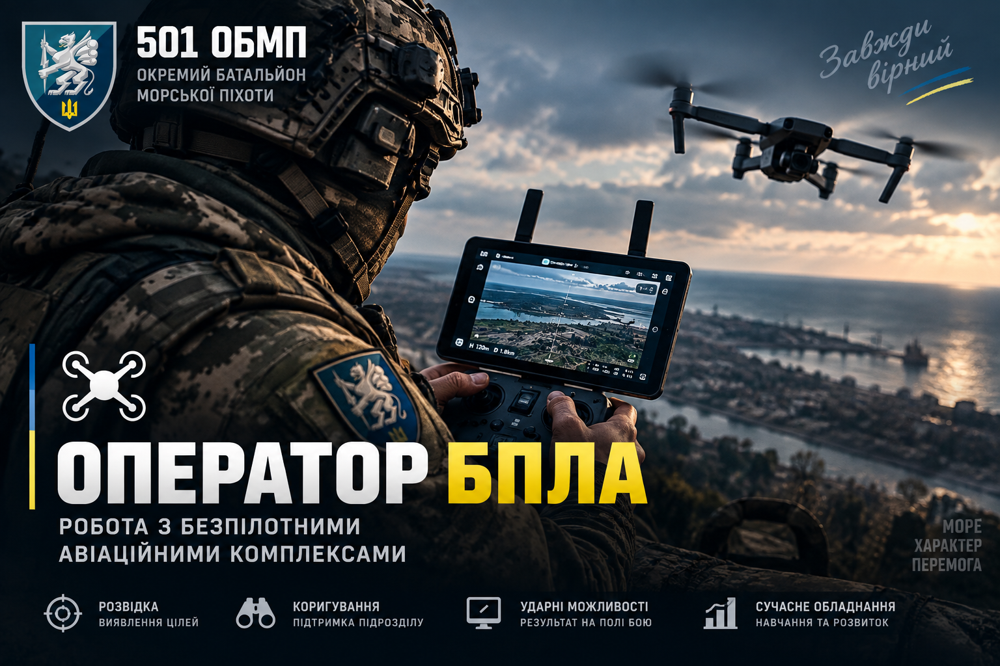
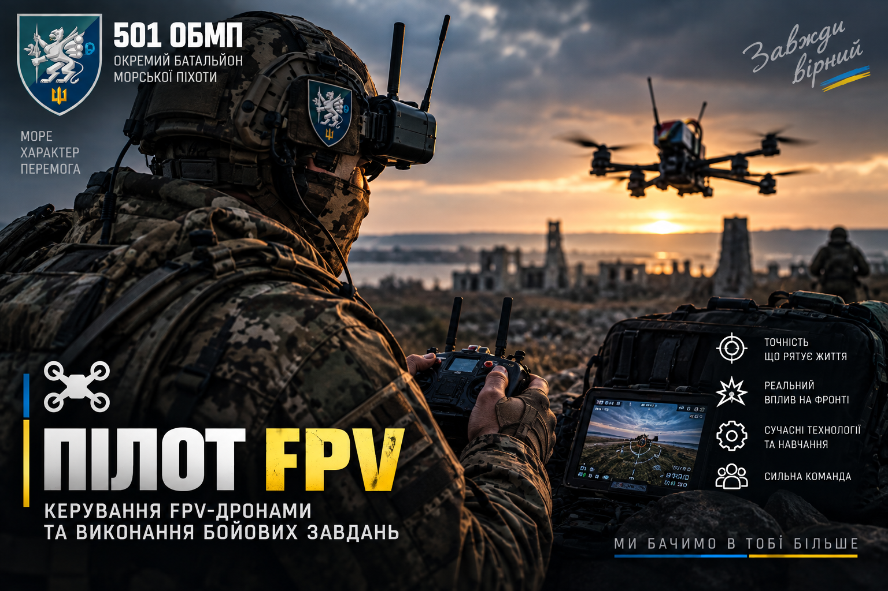
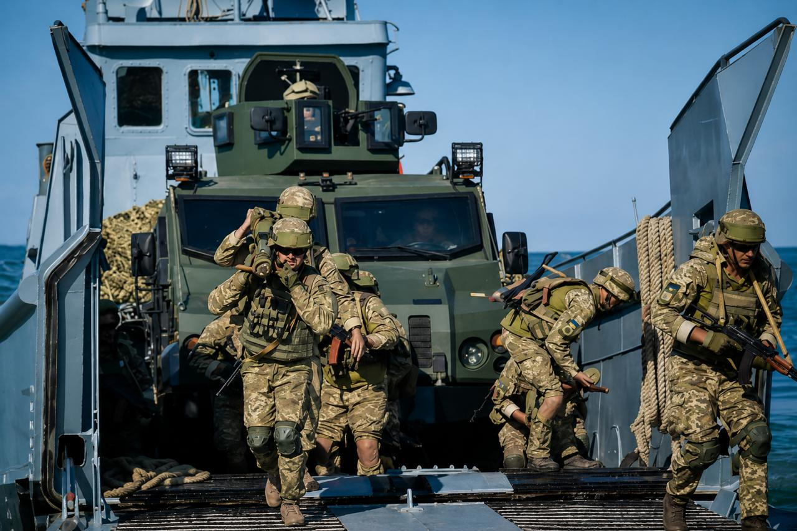
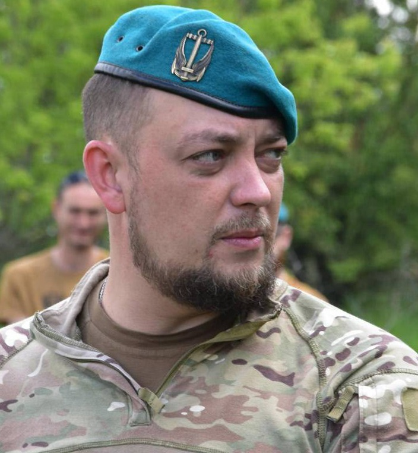
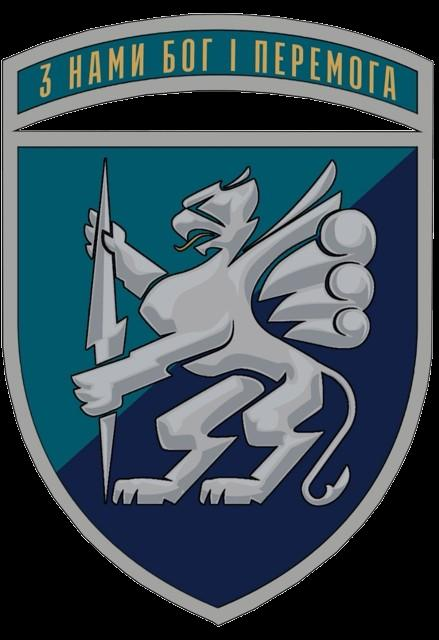

З НАМИ БОГ І ПЕРЕМОГА!
Участь у бойових діях та виконанні завдань у складі морської піхоти України.
Навчання та професійний розвиток під керівництвом досвідчених інструкторів.
Сучасні засоби зв'язку, БПЛА та військова техніка.
Командна робота та підтримка побратимів.

Робота з безпілотними авіаційними комплексами.

Керування FPV-дронами та виконання завдань.
Керування та обслуговування техніки.
Медичне забезпечення особового складу.
Виконання бойових завдань.
Вогнева підтримка підрозділу.
Застосування гранатометного озброєння.
Забезпечення зв'язку підрозділу.
501 ОБМП — військове формування морської піхоти України у складі 36-ї окремої бригади морської піхоти імені контр-адмірала Михайла Білинського 30-го корпусу морської піхоти ВМС ЗСУ.
Історія підрозділу бере свій початок з 2000 року, коли на базі 10-ї бригади Національної гвардії України було створено 501-й окремий механізований полк.
У 2003 році його було переформовано на окремий механізований батальйон військ берегової оборони ВМС ЗСУ. Ключовою датою для підрозділу стало 26 грудня 2013 року, коли військовослужбовці склали клятву морського піхотинця, і батальйон офіційно отримав статус морської піхоти з дислокацією у місті Керч.
Після анексії Криму у 2014 році, батальйон, не зрадивши присязі, був передислокований до міста Бердянськ Запорізької області.
Серед морських піхотинців підрозділ називають «Грифонами», що свідчить про могутність, швидкість та силу підрозділу. Грифона зображено на шевроні.
З 2014 по 2022 роки батальйон регулярно виконував бойові завдання в зоні проведення АТО/ООС на території Донецької та Луганської областей (зокрема, обороняв Широкине та Лебединське).
Окремий батальйон суттєво відрізняється від класичних «лінійних» батальйонів, хоча й виконує завдання у одній смузі. Підрозділ більш самостійний і може виконувати задачі у відриві від бригади.
До структури батальйону входять:
Бойовий прапор та стрічка до прапору «За мужність та відвагу» — почесна відзнака Президента України, якою нагороджують бойові підрозділи за особливі бойові заслуги у захисті державного суверенітету та територіальної цілісності України.
За проявлену мужність із 24 лютого 2022 року державними та відомчими нагородами відзначено більше 472 військовослужбовців батальйону.
У 501 ОБМП особливе місце займають традиції, які формують бойовий дух, а саме:
Найбільшою цінністю батальйону є збереження життя та здоров’я побратимів. Війна — страшне явище, до якого неможливо бути готовим на 100%. Підрозділ розуміє, що таке страх, але навчився з ним боротися.
Під час виконання бойових завдань морські піхотинці керуються принципами професіоналізму та дисципліни. Бійці вірять, що міцність підрозділу полягає не лише в озброєнні, але й у повазі та єдності.
«З НАМИ БОГ І ПЕРЕМОГА!»
Більшість підрозділу складають колишні цивільні громадяни, які ще у 2021 році не знали, що таке армія. Їм небайдуже майбутнє їхньої країни, долі їхніх сімей, їхня історія.
Це колишні продавці, аграрії, будівельники, спортсмени, митці, менеджери, директора, вчителі, програмісти та лікарі, які взяли в руки зброю і доєднались до батальйону.
Молоді, сучасні командири, які встигли пройти насичений бойовий шлях, бережуть і надихають інших, допомагають адаптуватись та діляться досвідом.
Тут немає «армійщини», команда активно впроваджує сучасні системи менеджменту, досліджує нові зразки озброєння та щоденно прагне ставати краще.
Кожен знайде своє місце!


«Локі»
Підполковник
За плечима Ярослава Крикливого майже 20 років служби у Збройних Силах України. Військовий шлях розпочав на кораблі «Тернопіль» у 2008 році.
Далі проходив службу у гранатометному відділенні в ОК «Північ».
У 2015 році вступив до лав Національної академії сухопутних військ імені Гетьмана Петра Сагайдачного, яку закінчив у 2019 році та був призначений на посаду командира взводу морської піхоти 88 ОБМП.
У 2022 році, захищаючи острів Зміїний, потрапив у полон. Після звільнення з полону повернувся в стрій морських піхотинців.
З 2023 року очолює 501 окремий батальйон морської піхоти.
За неповних 20 років військової служби пройшов шлях від матроса до командира військової частини. Брав участь у складних бойових операціях.
501-й окремий батальйон морської піхоти оснащений сучасними зразками бойової техніки та озброєння.
Морська піхота славиться сучасними зразками озброєння, на які батальйон успішно перейшов зі старого радянського на початку повномасштабного вторгнення.
У парку техніки є надійні американські гусеничні бронетранспортери M113, відомі броньовані автофургони «Хамві» (HMMWV) та українські позашляховики типу «Козак».
Морські піхотинці працюють із надійними штурмовими гвинтівками COLT M4 та M5 натівського зразку, кулеметами марки Browning та ПТРК Javelin.
Активно використовуються наземні роботизовані комплекси (НРК), дрони різних типів — від FPV (радіо, оптоволокно) до відомих Nemesis та «Баби-Яги» — як її люблять називати вороги.

Facebook: 501 ОБМП
Email: obmp148@gmail.com
З нами Бог і Перемога!